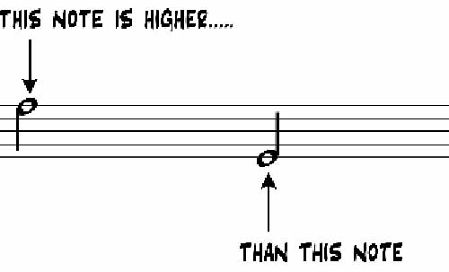
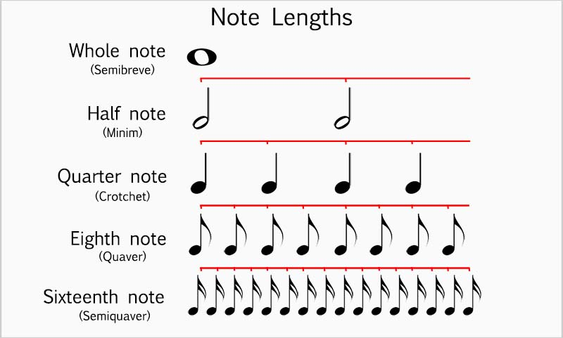
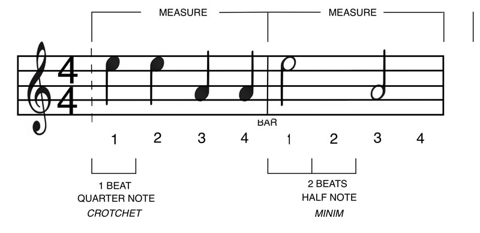
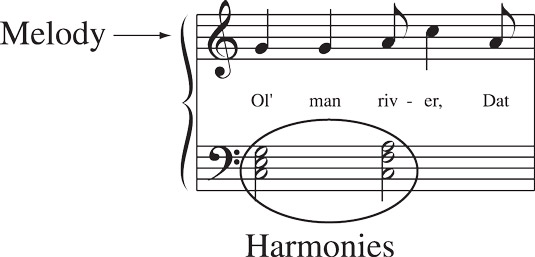

Music is an art form and the definition of what makes music music differs wildly between cultures. However, useful components to break music down into include but are not limited to:
While all of these components are studied in music theory for this lesson we will only be focusing on pitch, rhythm, melody, and harmony.
When a musician blows through their horn or hits their instrument with a mallet it produces a vibration which we can hear. The frequency of this vibration determines how high or low it sounds to our ears. This is the pitch of the instrument and it is one of the most fundamental things that music notation is meant to represent this is represent by the vertical axis of musical notation with the higher notes sounding higher and the lower notes sounding lower.
The other major musical notation communicates is rhythm. Rhythm shows the musician when and for how long to play a certain pitch. Rhythm is represented in two ways. The length to play the pitch is represented by the symbol used as the note.
While when to play the pitch is represented on the x axis of the notation.
With an understanding of pitch and rhythm we can now have a simplistic representation of music on paper.

Since we now understand the basics we can talk about the higher level concepts including harmony and melody. Harmony and melody arise from patterns and the interplay between multiples notes and the rhythm. Melody is usually the most recognizable part of a song, it's the thing you sing in you head and often is what the singer sings. A melody is a sequence of single notes that is communicated as the most important idea in the music. In contrast, harmony is the interplay between notes played at the same time. Harmony has a large role in creating the mood of a piece of music. It controls the tension and the release of the music as well as building out the melody.
How many half notes fit into a whole note?
Which note has a higher pitch?
The placement of the note from left to right determines?
The placement of the note from top to bottom determines?
What is usually the most memorable part of music?
© 2023 Christian Mosey